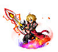
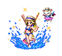
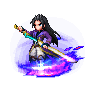

gumi Asia · Game Designer · 2020–2024
FINAL FANTASY BRAVE EXVIUS Global
Unit design, combat balancing and recurring live-service content for FFBE Global, including JP-to-Global unit adaptation.
I liaised directly with Square Enix on unit specifications and coordinated with marketing, art and localization to support unit releases. My work included stat adjustments, data configuration and validation of Global implementation.
Credited as Game Designer in the Global release. View unit references and credits.
Selected units and official credits


Selected unit artwork from FFBE Global